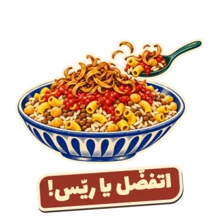

ملاحظات الإصدار · كشري بابا عبده للآيفون · Read in English
ملاحظات إصدار «كشري بابا عبده» 1.0: ملصقات وطلبية يومية والمزيد
«كشري بابا عبده» 1.0 متاحة الآن على App Store. هنا كل ما فيها: أسبوع الحكاية، والجيران، والمحل، والطلبية اليومية، وGame Center، وثمانية ملصقات ترسلها من الرسائل أو واتساب.

«كشري بابا عبده» لعبة طبخ كشري مجانية للآيفون. تدير محلًا صغيرًا في حارة من حواري القاهرة، وتقرأ كل طلب، وتبني الطبق، وتقدمه. تُلعب والشاشة بالعرض، بالعربية أو الإنجليزية، ومن غير مشتريات داخل التطبيق. ولقصة صنعها اقرأ تدوينة الإطلاق.
حكاية سبعة أيام
الحكاية سبعة أيام داخل اللعبة، لا سبعة أيام من الانتظار. كل يوم ترفع الباب وتخدم الجيران الذين يدخلون المحل. تستطيع أن تكسب حتى ثلاث نجوم في اليوم، أي 21 نجمة في الأسبوع.
يزور المحل 16 جارًا، ولكل منهم طلبه المعتاد: أمينة، وحسن، وسيد، ومريم، وفاروق، وزياد، ونادية، ومحمود، وبطرس، وأبونا مينا، وهاني، ودينا، وسلوى، ورضا، وكريم، وأم وليد. بعض الأيام زحمة. لكل زبون مهلة، والطبق السريع يكسب البقشيش كاملًا، والزبون الذي ينتظر طويلًا يمشي.
ويطلب الجيران أيضًا مساعدة في طلبات جانبية، مثل غداء الورشة ومجموعة مذاكرة مريم. تستطيع أن تساعد الآن أو ترجع لها بعدين.

ابنِ الطبق
فوق الطبق ست صوانٍ: الأرز، والمكرونة، والعدس، والحمص، والصلصة، والبصل المحمّر. اضغط الصينية لتضيف مغرفة. والدقة والشطة في زجاجات. راجع التذكرة، ثم دق الجرس لتقدّم الطبق.
- اضغط مطولًا على التذكرة لتقرأ الطلب كاملًا. يقف الوقت وأنت تقرأ.
- طلب المساعدة يوقف الوقت أيضًا.
- الطبق الخطأ يوضح الناقص والزيادة، فتتعلم الطلب المعتاد لكل جار.

زيّن المحل
اصرف رزق اليوم على تسع إضافات للمحل. الفلوس فلوس داخل اللعبة، لا فلوس حقيقية.
- مفرش للترابيزة: 40
- سبورة المنيو: 50
- زرعة للشباك: 60
- صورتين للحيطة: 60
- يافطة مينا: 80
- لمبة معلّقة: 80
- كرسيين خشب: 90
- مروحة حائط: 140
- ترابيزة وكرسيين: 180

بعد الحكاية
- أيام مفتوحة: كمّل خدمة الجيران واكسب أكثر للمحل.
- طلبية النهارده: مجموعة طلبات جديدة كل يوم، من منتصف الليل إلى منتصف الليل بتوقيت UTC. وتعرض الشاشة الرئيسية موعد الطلبية القادمة.
- أحسن خدمة ليك: ثمانية طلبات من غير مهلة. الأكثر طلبات صحيحة يكسب، والوقت الأقل يفصل عند التعادل.
- تدريب حر: من غير وقت ولا فلوس. رصيدك وحكايتك يبقيان كما هما.

Game Center
ثلاث لوحات متصدرين: طلبية النهارده (صافي مكسب اليوم)، وأحسن خدمة ليك (الطلبات الصحيحة من ثمانية ثم الوقت)، ونجوم الأسبوع (نجوم أيام الحكاية السبعة).
عشرة إنجازات: أول طبق، وقفلة بثلاث نجوم، والأسبوع منوّر، وآخر الأسبوع، و٨ على السريع، ومحدش مشي، وطلبية جديدة، وكل يوم موجود (الطلبية اليومية سبعة أيام متتالية)، وجدع مع الجيران، والمحل على ذوقك (اشترِ كل الإضافات).
ثمانية ملصقات
تأتي اللعبة بحزمة ملصقات اسمها «من عند بابا عبده». الكلام عليها باللهجة المصرية، وفيها حسن وأمينة والجرس والطباخ وطبق كشري كامل.



- الرسائل: افتح محادثة، واضغط +، ثم الملصقات، واختر «من عند بابا عبده».
- واتساب: افتح «استيكرات المحل» في اللعبة واضغط «ضيفها لواتساب».
- أي مكان آخر: اضغط الملصق لترسله صورة.
شارك التقفيلة
في آخر كل يوم من أيام الحكاية، شارك فاتورة اليوم صورةً أو نصًا. وفعّل «من غير المبلغ» إن أردت أن تشارك اليوم من غير الرقم.
اللغة والوقت والخصوصية
- العب بالعربية أو الإنجليزية. والجيران يتكلمون باللهجة المصرية في الحالتين.
- اختر وقتًا إضافيًا من الإعدادات إن كانت المهلة قصيرة عليك.
- عناوين لـ VoiceOver ودعم للخط الكبير.
- تحليلات اللعب وتقارير الأعطال تساعدني في إصلاح المشاكل. وتستطيع إيقاف كل واحدة منها من داخل اللعبة.
أسئلة
كيف أستخدم ملصقات «بابا عبده» في الرسائل؟ افتح محادثة في تطبيق الرسائل، واضغط +، ثم الملصقات. اختر «من عند بابا عبده» واضغط الملصق الذي تريده.
هل أستطيع إضافة الملصقات إلى واتساب؟ نعم. افتح «استيكرات المحل» في اللعبة واضغط «ضيفها لواتساب». ويمكنك أيضًا أن تضغط أي ملصق لترسله صورة.
ما الطلبية اليومية؟ مجموعة طلبات جديدة كل يوم، من منتصف الليل إلى منتصف الليل بتوقيت UTC. يدخل صافي مكسبك لوحة «طلبية النهارده» في Game Center.
هل الفلوس في اللعبة حقيقية؟ لا. تكسب وتصرف فلوسًا داخل اللعبة فقط. اللعبة مجانية ولا توجد فيها مشتريات داخل التطبيق.